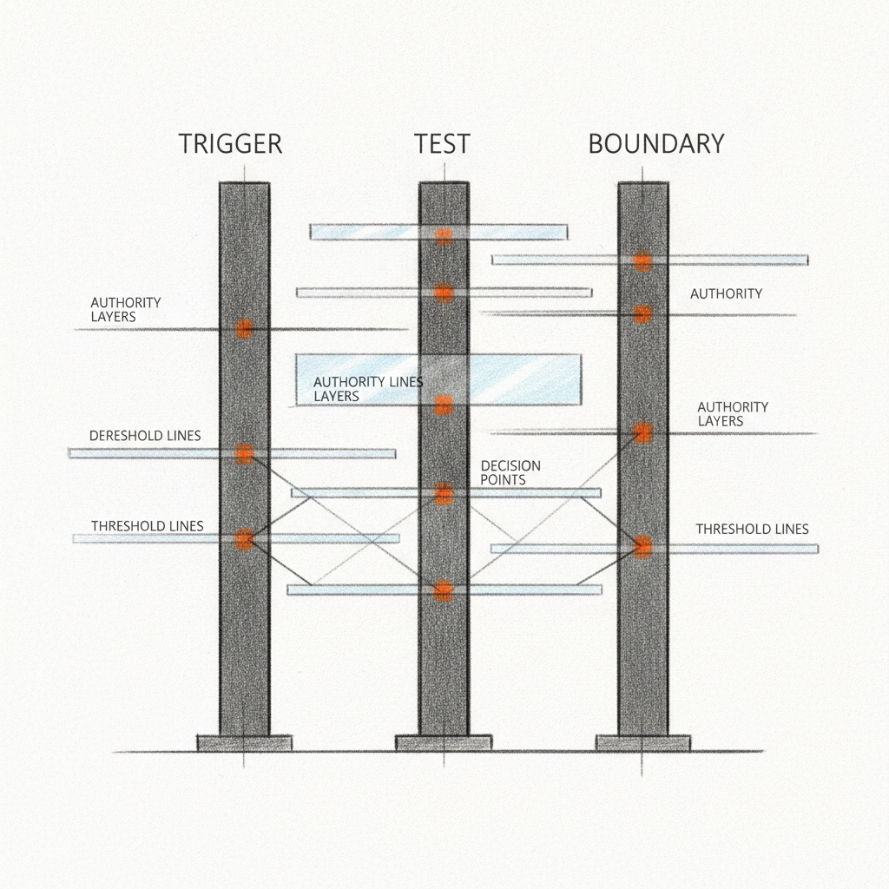

Drafted: 2026-06-19
OS Pillar: Operating Model OS
Quarterly Theme: The Machine
Subject: The system that decides without you
Preheader: Delegating decisions doesn't scale. Building the system that produces them does.
Insight summary: Business owners who refuse to delegate strategic decisions aren't protecting the business — they're guaranteeing that the people capable of scaling it will leave for environments where their judgment matters.
This week: succession, delegation, and AI rollouts all point to the same question. Who decides when the owner steps back.
The most expensive asset in a $20 million business is the owner's instinct that is still right. Chief Executive ran two pieces this week pointing at the same idea from different angles: one on the cost of conversations leaders avoid, one on a fifteen-year inheritor admitting that letting go is harder than taking hold. Both arrive at a place most owners do not want to sit. The instinct that built the business is the same instinct that now keeps the team from building anything. Being right has become a way of staying central. The business pays for the centrality in ways that do not show up on the P&L.
Your team brings you decisions you have already told them to handle. You delegated last quarter. You said the words again last week. The decisions keep arriving anyway.
The instinct is to read this as a confidence problem in the team. It is not. It is a design problem in you.
Most owners try to delegate decisions one at a time. A decision lands, you push it back, you tell the manager to own it. Two weeks later a similar decision lands from the same manager. You push it back again. Over a year you delegate the same decision forty times and feel like nothing is moving. Nothing is moving because you are delegating decisions instead of building the system that produces them.
There is a difference. Delegating a decision moves one item off your desk. Building a system that produces decisions moves a whole category off your desk permanently. The first is generosity. The second is architecture.
The Operating Model OS uses one specific artifact for this work: the Decision Rule. Three components, written down, on one page. The trigger names the recurring situation. The test names the question the team should answer before acting, usually a numeric threshold, a customer tier, a risk band. The boundary names the line above which the decision still escalates to you. A vendor renewal under $25,000 with a customer impact rating below three is decided by operations, full stop. Above either line, the call comes back to ownership. Trigger, test, boundary. That is the artifact.
Here is the part harder than writing the rule. The Decision Rule only works when you actually want to stop being the person with the best answer. The framework is straightforward. The shift it requires is not. You have been right enough times that your instinct has become the company's default operating system. The team has learned this. They are not waiting for permission. They are waiting for the chance to ask you, because asking you is how good decisions have always been made here.
To install the rule, you have to want a different version of being right. You have to want a system that produces a decision 85 percent as good as yours, made in two hours instead of two weeks, by someone who is not you. That is not a capability question. It is a desire question. Most owners stall right here. They write the rule. They never use it. The first time the team applies it and the answer is slightly off from what they would have chosen, they intervene. The intervention teaches the team to wait again.
This week, pick one recurring decision that lands on your desk weekly. Write the trigger, the test, the boundary. Send it to the role that should own it. Then watch the next instance go by without your input. The discomfort you feel watching it is the diagnosis. Sit with it.
LongRange Capital agreed this week to acquire Pizza Hut from Yum Brands for $1.5 billion, with Yum China Holdings taking the Mainland China business for an additional $1.2 billion, according to Middle Market Growth.
A $1.5 billion platform deal is not a logo purchase. It is a bet that the operating model can be rebuilt outside Yum's decision rights, supply chain rules, and capital allocation logic. Yum made those decisions for decades. They now have to come from somewhere else inside Pizza Hut. The next twelve months at LongRange will be a case study in installing decision architecture into a business that lived inside someone else's.
For US mid-market owners, the lesson is structural. When the system that produced decisions disappears, capital does not replace it. Architecture does. The carve-out playbook is the same playbook the founder-run business needs. Sponsors run it with a clock. Owners often run it without one, which is why they run out of time before they realize what they were supposed to be building.
The Decision Rule One-Pager - a single page documenting the trigger, test, and boundary for one recurring decision in your business. The template the owner writes once and the team applies without escalation. Every decision still routing through your calendar is a recurring decision the business has not yet converted into an artifact. Build it in Notion, Google Docs, or a printed sheet. One page. Three sections. Start with the decision that arrived twice this month.
Watch for this week: the number of decisions that land in your inbox that should have been resolved one level down. Count them. Not as a self-improvement exercise. As a diagnostic. If the count is more than five, the constraint is not your team's capability. The constraint is that no one has written down which decisions are theirs. The count is your first data point.
If something in this issue landed, reply - I read every response.
If this is useful to someone in your network, forward it - it takes ten seconds and it's the highest compliment.
When you're ready to work together directly, here is how we start: [link]
Draft generated by the pipeline. Review and edit before sending.